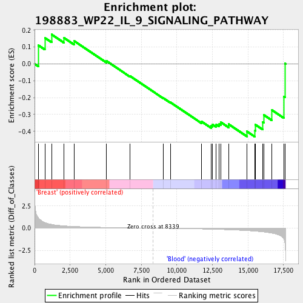
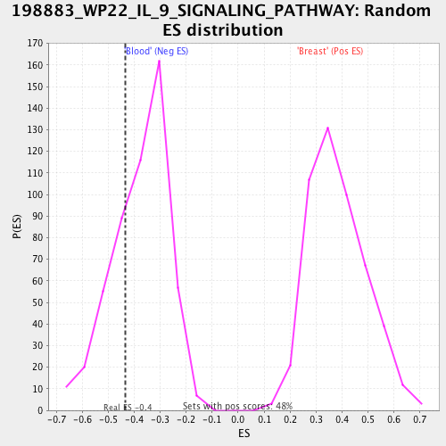

| | | Dataset | Blood_vs_Breast.Blood_vs_Breast |
| Phenotype | Blood_vs_Breast.cls |
| Upregulated in class | Blood |
| GeneSet | 198883_WP22_IL_9_SIGNALING_PATHWAY |
| Enrichment Score (ES) | -0.43312606 |
| Normalized Enrichment Score (NES) | -1.1510823 |
| Nominal p-value | 0.2843327 |
| FDR q-value | 0.4364651 |
| FWER p-Value | 1.0 |
Table: GSEA Results Summary

Fig 1: Enrichment plot: 198883_WP22_IL_9_SIGNALING_PATHWAY
Profile of the Running ES Score & Positions of GeneSet Members on the Rank Ordered List
| PROBE | DESCRIPTION
(from dataset) | GENE SYMBOL | GENE_TITLE | RANK IN GENE LIST | RANK METRIC SCORE | RUNNING ES | CORE ENRICHMENT | | 1 | 6464 | SHC1 | | | 276 | 1.157 | 0.1096 | No |
| 2 | 3716 | JAK1 | | | 721 | 0.649 | 0.1546 | No |
| 3 | 207 | AKT1 | | | 1198 | 0.433 | 0.1745 | No |
| 4 | 7415 | VCP | | | 2071 | 0.270 | 0.1543 | No |
| 5 | 8660 | IRS2 | | | 2773 | 0.203 | 0.1364 | No |
| 6 | 3667 | IRS1 | | | 5054 | 0.093 | 0.0171 | No |
| 7 | 6772 | STAT1 | | | 6699 | 0.044 | -0.0714 | No |
| 8 | 5605 | MAP2K2 | | | 9027 | -0.016 | -0.2017 | No |
| 9 | 5595 | MAPK3 | | | 9549 | -0.030 | -0.2281 | No |
| 10 | 5781 | PTPN11 | | | 11733 | -0.094 | -0.3418 | No |
| 11 | 6774 | STAT3 | | | 12405 | -0.119 | -0.3670 | No |
| 12 | 5295 | PIK3R1 | | | 12515 | -0.123 | -0.3598 | No |
| 13 | 10524 | KAT5 | | | 12773 | -0.136 | -0.3597 | No |
| 14 | 5594 | MAPK1 | | | 12985 | -0.146 | -0.3559 | No |
| 15 | 5604 | MAP2K1 | | | 13092 | -0.151 | -0.3457 | No |
| 16 | 6777 | STAT5B | | | 13640 | -0.179 | -0.3574 | No |
| 17 | 3578 | IL9 | | | 14922 | -0.275 | -0.4003 | Yes |
| 18 | 9021 | SOCS3 | | | 15501 | -0.339 | -0.3964 | Yes |
| 19 | 3581 | IL9R | | | 15518 | -0.341 | -0.3604 | Yes |
| 20 | 7297 | TYK2 | | | 16032 | -0.416 | -0.3444 | Yes |
| 21 | 3718 | JAK3 | | | 16107 | -0.430 | -0.3021 | Yes |
| 22 | 2885 | GRB2 | | | 16693 | -0.561 | -0.2746 | Yes |
| 23 | 6776 | STAT5A | | | 17525 | -1.190 | -0.1929 | Yes |
| 24 | 3561 | IL2RG | | | 17610 | -1.846 | 0.0020 | Yes |
Table: GSEA details [plain text format]
Fig 2: 198883_WP22_IL_9_SIGNALING_PATHWAY
Blue-Pink O' Gram in the Space of the Analyzed GeneSet

Fig 3: 198883_WP22_IL_9_SIGNALING_PATHWAY: Random ES distribution
Gene set null distribution of ES for 198883_WP22_IL_9_SIGNALING_PATHWAY